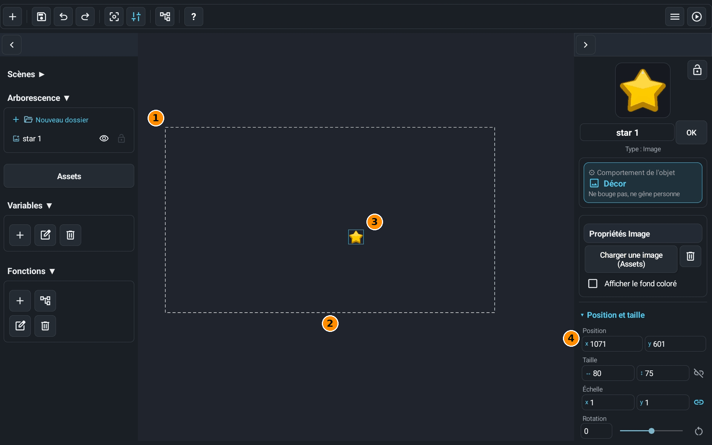
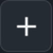
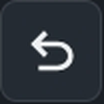
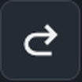
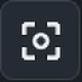
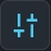
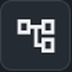
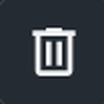
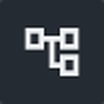
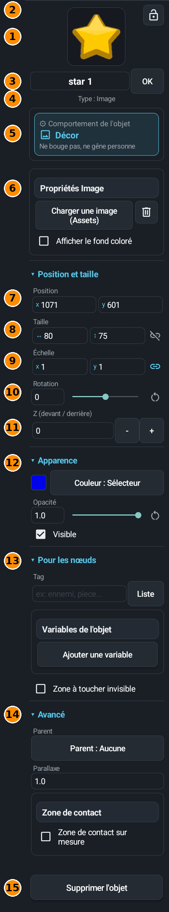

L'editor è la schermata dove metti i tuoi oggetti in una scena. Questa guida non ti insegna a fare un gioco: ti mostra dove sono le cose e a cosa servono i pulsanti.
Dov'è lo 0/0 della scena?
Per mettere un oggetto nel posto giusto bisogna sapere come si contano le posizioni. Guarda la schermata: i numeri della Posizione della stella sono spiegati subito sotto.

- 1Lo 0/0: è l'angolo in alto a sinistra del rettangolo tratteggiato. Tutti i numeri di posizione si contano a partire da questo punto.
- 2Le linee tratteggiate: è l'area di gioco, ciò che il giocatore vede all'inizio. Di default misura 1920 per 1080 (1080 per 1920 in un gioco verticale). Puoi mettere oggetti fuori: il giocatore li vedrà solo se la camera si sposta.
- 3Un oggetto (qui la stella): la sua posizione è quella del suo angolo in alto a sinistra, non del centro.
- 4Posizione, x e y: x conta verso destra, y conta verso il basso (più y è grande, più l'oggetto è in basso). Qui la stella è a x 1071 e y 601: 1071 verso destra e 601 verso il basso a partire dallo 0/0.
La barra in alto
Da sinistra a destra:

Aggiungi
Crea ciò che ti serve. Il menu propone Oggetto… (crea un oggetto) e, per le scene: Crea una scena, Rinomina la scena e Elimina la scena.- Salva
Conserva il tuo progetto. Lo fa anche il salvataggio automatico, ma tocca questo pulsante prima di uscire se vuoi essere sicuro. 
Annulla
Annulla l'ultima modifica della scena (oggetto aggiunto, spostato, eliminato, impostazione cambiata…), fino a 50 volte.
Ripeti
Rimette ciò che hai appena annullato.
Zoom normale
Riporta lo zoom al 100%. In un gioco verticale mostra tutta l'area di gioco. Puoi anche pizzicare la scena con due dita per fare zoom.
Strumenti
Apre un menu di strumenti. L'icona diventa blu quando una modalità è attiva. Solo spostare: attivo, trascinare un oggetto lo sposta soltanto (niente maniglie per ingrandire o ruotare). Sposta la vista: trascinare nella scena fa scorrere la vista invece di muovere un oggetto. Griglia magnetica: gli oggetti si agganciano alla griglia. Trovi anche Copia l'oggetto, Ingrandisci, Rimpicciolisci, Muoversi nella scena e Scopri l'editor (una guida passo passo nell'editor).
Blueprint
Apre il Blueprint della scena, la schermata dei nodi (vedi la guida Il Blueprint in immagini).- Aiuto
Apre l'aiuto sul sito, con tutte le guide. - Menu
Apre un menu: Impostazioni del gioco (dimensione e formato del gioco, salvataggio automatico…), Missioni passo dopo passo, Controlla il mio gioco (cerca le dimenticanze nel tuo gioco) e Esci dal progetto. - Gioca
Avvia il tuo gioco per provarlo. Compare un pulsante ■ per tornare all'editor. Se la scena aperta non è la scena iniziale, Yop2D chiede da quale cominciare.
Il pannello di sinistra
Tocca la freccia < in alto per chiudere questo pannello e avere più spazio (la freccia > fa lo stesso per l'Ispettore). Su uno schermo piccolo resta aperto un solo pannello alla volta. Ogni titolo si chiude toccandolo.
- Scene: l'elenco delle tue scene (un livello, un menu…). Tocca un nome per aprirla. Con più scene, una stella segna la scena iniziale.
- Gerarchia: tutti gli oggetti della scena, in elenco. Tocca un nome per scegliere l'oggetto. Puoi metterli in cartelle con Nuova cartella (non cambia nulla nel gioco).
- Asset: apre i tuoi file (immagini, suoni, font…) e gli strumenti per crearne alcuni, come la musica o i rumori.
- Variabili: le variabili del gioco (il punteggio, le vite…). Tocca una variabile nell'elenco per sceglierla.
- Funzioni: funzioni, cioè piccoli gruppi di nodi che puoi riutilizzare. Stesso principio delle variabili.
- Mostra / nascondi l'oggetto
Nell'elenco degli oggetti, l'occhio nasconde o mostra l'oggetto. È la casella Visibile dell'Ispettore: un oggetto nascosto non si vede nemmeno nel gioco. - Blocca l'oggetto
Un oggetto bloccato non può più essere spostato o ridimensionato per errore. Il lucchetto è ambra quando l'oggetto è bloccato. - Aggiungi
Sotto le variabili, crea una variabile. Sotto le funzioni, crea una funzione. - Rinomina
Tocca prima il nome nell'elenco (variabile o funzione), poi questo pulsante. 
Elimina
Stesso principio: scegli prima, poi tocca questo pulsante.
Modifica la funzione
Scegli una funzione nell'elenco, poi questo pulsante: il Blueprint si apre su di essa.
L'Ispettore di un oggetto
Quando tocchi un oggetto, l'Ispettore (il pannello di destra) mostra tutte le sue impostazioni. È lungo e cambia un po' secondo il tipo di oggetto. Ecco le sue parti dall'alto in basso, per un'immagine.

- 1L'anteprima: l'immagine dell'oggetto. Toccala per caricarne un'altra.
- 2Il lucchetto: blocca l'oggetto per non spostarlo per errore (lo stesso dell'elenco degli oggetti).
- 3Il nome dell'oggetto: cambialo e tocca OK. I nodi ritrovano l'oggetto grazie a questo nome.
- 4Il tipo: Immagine, Testo, Forma, Zona… È solo un'indicazione.
- 5Comportamento dell'oggetto: come si comporta l'oggetto nel gioco. Decorazione significa che non si muove e non dà fastidio a nessuno. Toccalo per scegliere un altro comportamento (terreno, personaggio, piattaforma…).
- 6Le impostazioni del tipo (qui Proprietà Immagine): caricare un'altra immagine, toglierla con il cestino, mostrare uno sfondo colorato. Questa parte cambia secondo il tipo di oggetto.
- 7Posizione: x e y, contati a partire dallo 0/0 (vedi sopra).
- 8Dimensioni: larghezza ↔ e altezza ↕ dell'oggetto, in pixel. Quando la catena a destra è chiusa (blu), i due numeri cambiano insieme per mantenere le proporzioni.
- 9Scala: un ingrandimento. 1 = dimensione normale, 2 = il doppio, -1 = capovolto come in uno specchio. Stessa catena per le proporzioni.
- 10Rotazione: l'angolo, in gradi. Il cursore fa ruotare l'oggetto, il pulsante rotondo torna a 0.
- 11Z (davanti / dietro): l'ordine di disegno. Più il numero è grande, più l'oggetto sta davanti agli altri. I pulsanti - e + lo cambiano di uno.
- 12Aspetto: il colore, l'Opacità (1 = ben visibile, 0 = invisibile; il pulsante rotondo rimette 1) e la casella Visibile.
- 13Per i nodi: ciò che serve nel Blueprint. Un Tag è un nome di famiglia (per esempio «nemico») per scegliere più oggetti in una volta; Lista mostra quelli già usati. Ci sono anche le Variabili dell'oggetto e la casella Zona da toccare invisibile (per le zone da toccare che non si vedono nel gioco).
- 14Avanzate: Genitore (l'oggetto segue un altro oggetto, come una mano su un braccio), Parallasse (1 = l'oggetto si muove con lo sfondo, 0 = resta attaccato allo schermo, in mezzo = effetto di profondità) e Zona di contatto (la parte dell'oggetto che conta per i tocchi e le collisioni; Zona di contatto su misura permette di disegnarla).
- 15Elimina l'oggetto: cancella l'oggetto dalla scena.